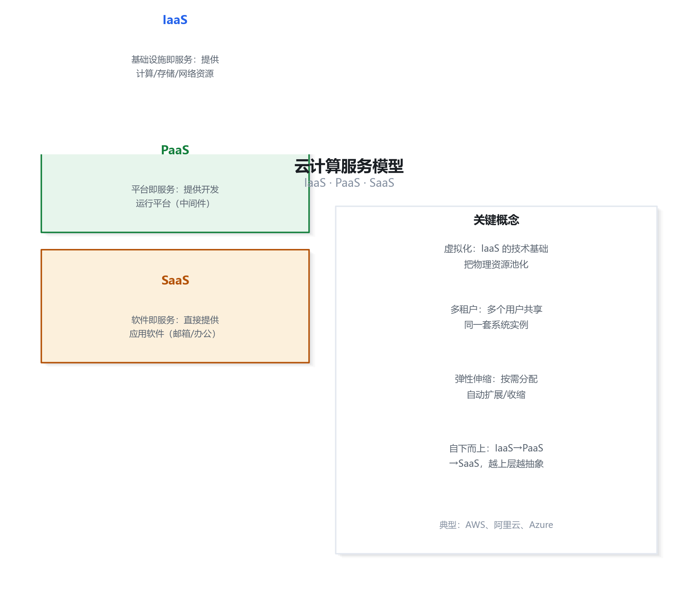
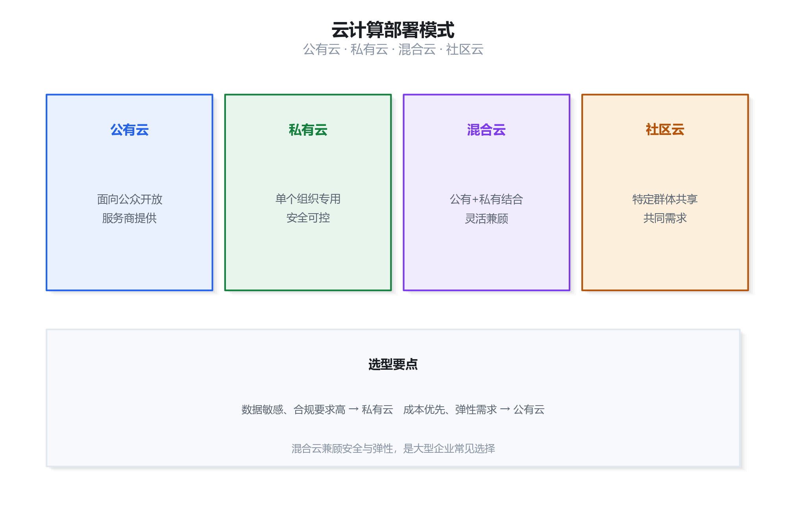
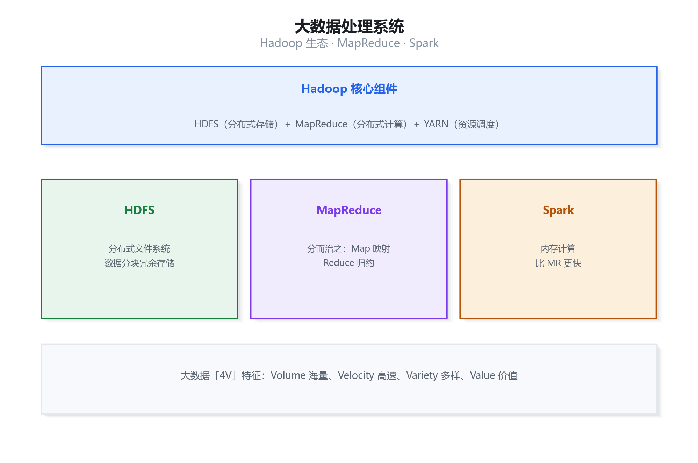
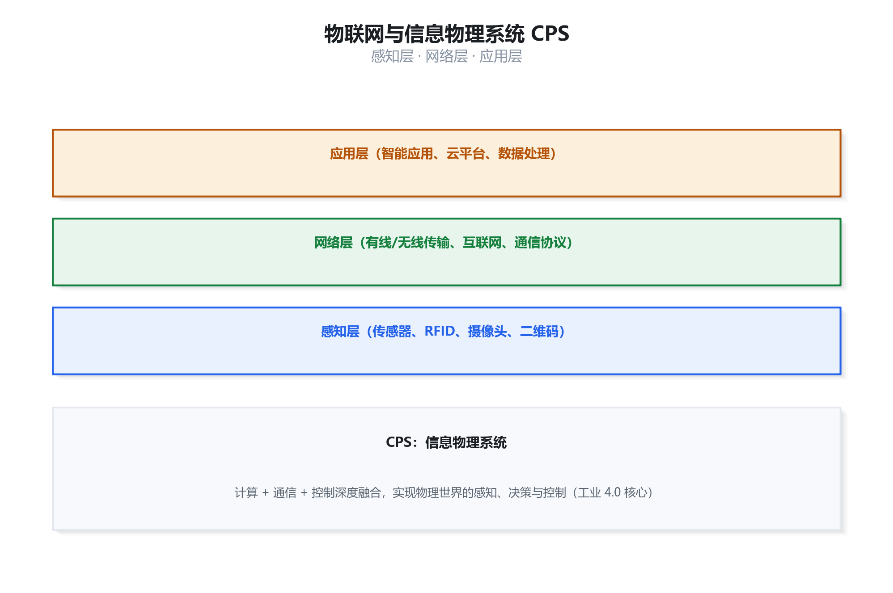
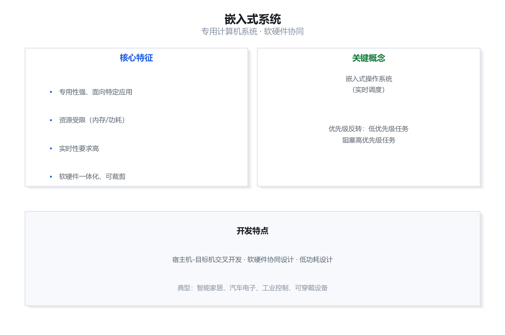
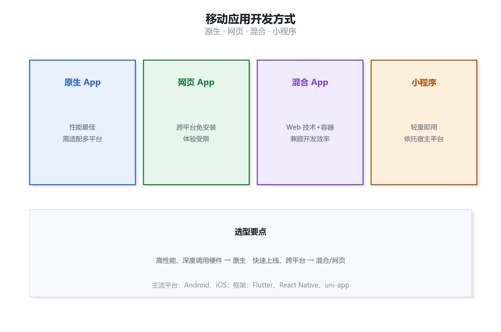
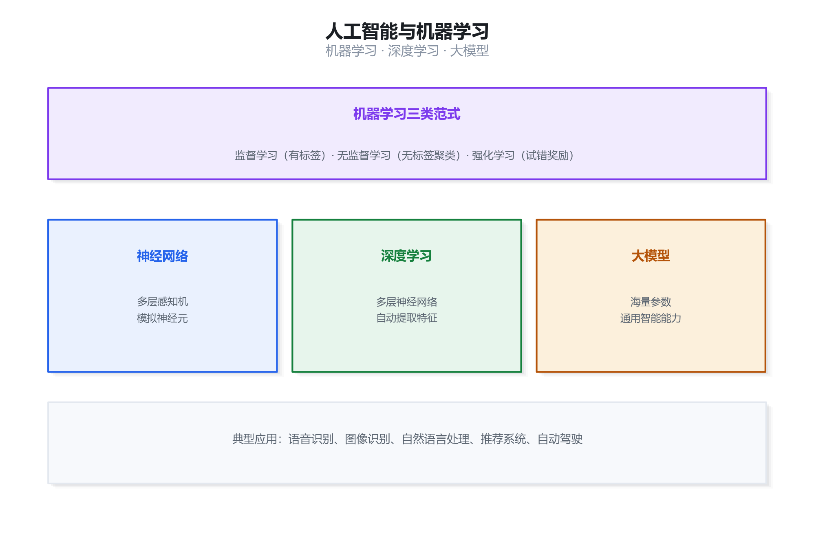
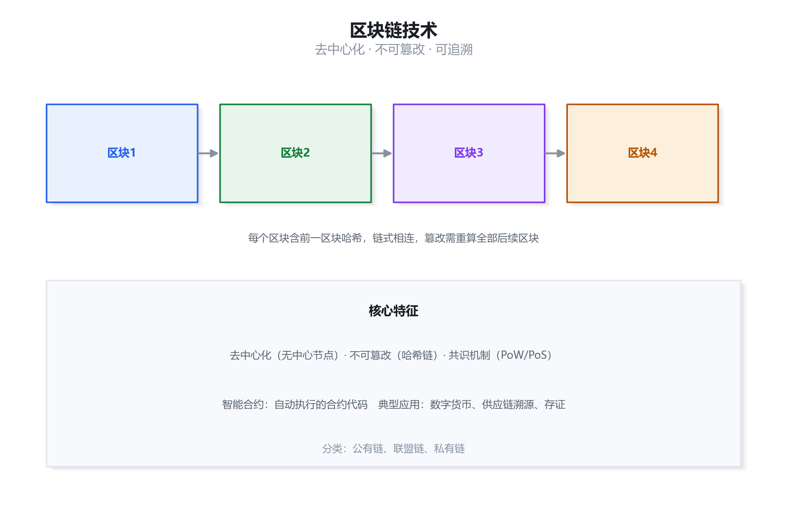

新技术专题：考点精讲 + 真题详解
本章对应官方教程中分散于各篇的新技术相关考点，是上午「综合知识」的稳定出分区，近年约占 4—7 分且呈上升趋势。云计算的服务模型与部署模式、大数据处理技术、物联网与信息物理系统（CPS）、嵌入式系统、移动应用开发方式、人工智能与机器学习、区块链技术是高频考点。本资料逐条讲透概念、给出真实原理插图（可放大细看）、并按「先讲道理、再列对照、最后逐步推导」的方式拆解真题。
云计算服务模型与部署模式
高频1.1 云计算的定义与五大基本特征
云计算（Cloud Computing）是一种按使用量付费的模式，它通过网络以按需、易扩展的方式提供可用的、便捷的、按需的网络访问，进入可配置的计算资源共享池（资源包括网络、服务器、存储、应用软件、服务）。美国国家标准与技术研究院（NIST）给出的定义被业界广泛引用，其五大基本特征与三类服务模型、四种部署模式是考试最常考的内容。教程
五大基本特征：
- 按需自服务（On-demand self-service）：消费者可单方面按需自动获取计算能力，无需与服务商人工交互。
- 泛在网络访问（Broad network access）：能力通过网络提供，支持各种标准终端（手机、笔记本、工作站）接入。
- 资源池化（Resource pooling）：计算资源以多租户模式服务众多客户，资源可按需动态分配和再分配，用户通常无需知道资源的确切位置。
- 快速弹性（Rapid elasticity）：能力可快速弹性伸缩，对用户而言可获取的资源近乎无限，可随时购买、随时释放。
- 可计量服务（Measured service）：通过计量能力自动控制和优化资源使用，服务双方都可获得透明化的用量报告。
1.2 三类服务模型：IaaS / PaaS / SaaS
三类服务模型的核心区别在于服务商管理到哪一层、用户自己管到哪一层。这是考试最爱考的对比点，务必从「谁负责什么」的角度理解，而不要死记名词。

| 服务模型 | 全称 | 提供什么 | 用户管什么 | 典型例子 |
|---|---|---|---|---|
| IaaS | 基础设施即服务 | 计算、存储、网络等基础设施资源（虚拟机、云硬盘） | 操作系统、中间件、运行时、应用、数据 | 阿里云 ECS、AWS EC2 |
| PaaS | 平台即服务 | 应用运行与开发平台（操作系统、中间件、数据库、开发框架） | 应用与数据 | Google App Engine、Heroku、阿里云 RDS |
| SaaS | 软件即服务 | 可直接使用的软件应用 | 几乎无需管理，仅使用和配置 | 钉钉、企业微信、Salesforce、Office 365 |
记忆技巧：从 IaaS 到 SaaS，用户的管理负担逐级减轻，服务商的封装程度逐级升高。IaaS 给你「毛坯房」（水电煤），PaaS 给你「装修好的房 + 厨具」（你只做菜），SaaS 直接给你「端上桌的菜」。
1.3 四种部署模式

- 公有云（Public Cloud）：云基础设施对公众开放，由云服务商拥有和运营，多个组织共享。优点是成本低、弹性好；缺点是数据安全与合规风险相对较高。
- 私有云（Private Cloud）：云基础设施专供单一组织使用，可由组织自己管理或委托第三方管理。优点是安全性、可控性高；缺点是建设与维护成本高。
- 社区云（Community Cloud）：由具有共同关切（如共同使命、安全要求、政策）的若干组织共同使用和管理。
- 混合云（Hybrid Cloud）：由两种或以上云（私有、社区、公有）组合而成，各自保持独立实体，但通过技术绑定在一起，实现数据和应用的可移植性。核心价值是兼顾安全与弹性——敏感数据放私有云，峰值算力用公有云。
1.4 云计算的关键支撑技术
- 虚拟化技术：云计算的核心基础，将物理资源抽象为逻辑资源，实现资源隔离与共享。包括服务器虚拟化、存储虚拟化、网络虚拟化、桌面虚拟化。
- 分布式计算与并行计算：将大任务分解到多台机器并行处理。
- 分布式存储：如 GFS/HDFS，提供高可靠、高可扩展的数据存储。
- 自动化管理与调度：通过资源调度算法实现负载均衡与弹性伸缩。
1.5 真题详解
【真题 1】在云计算服务模型中，用户只需要使用软件，而不需要管理底层基础设施和平台，也不需要开发维护软件，这种服务模型是（ ）。
A. IaaS B. PaaS C. SaaS D. DaaS
查看解析
答案：C
逐步推导：
第一步：抓题干关键——「只需要使用软件」「不需要管理底层」「不需要开发维护」，三个限定词都指向「软件已经做好，用户直接用」。
第二步：逐项对照——IaaS 用户要自己管操作系统及以上的所有层，排除 A；PaaS 用户仍需自己开发部署应用，排除 B；DaaS（数据即服务）不是 NIST 定义的三类基本服务模型，排除 D。
第三步：SaaS 正是「软件即服务」，用户直接使用软件、无需管理和开发，符合全部限定词，故选 C。
大数据处理技术
高频2.1 大数据的 4V 特征
大数据（Big Data）通常用「4V」来刻画其特征，这是最基础也最常考的考点：
| 特征 | 英文 | 含义 |
|---|---|---|
| 体量大 | Volume | 数据规模巨大，从 TB 级到 PB、EB 级 |
| 速度快 | Velocity | 数据产生和处理的速度快，要求实时或准实时处理 |
| 多样性 | Variety | 数据类型多样，包括结构化、半结构化和非结构化数据 |
| 价值密度低 | Value | 数据总量大但真正有价值的信息密度低，需深度挖掘 |
易错提醒：部分教材还补充第五个 V——真实性（Veracity），指数据的质量与可信度。考试中若给出 4V，一般指上述四项；若出现 Veracity，注意其含义是「数据质量与可信度」，不要与 Value 混淆。
2.2 大数据处理系统的技术架构

- 数据采集层：负责从各类数据源（日志、传感器、业务系统、网络爬虫）采集数据，如 Flume、Sqoop、Kafka。
- 数据存储层：提供海量数据的分布式存储，核心是 HDFS（Hadoop 分布式文件系统），以及 NoSQL 数据库（HBase、Redis）。
- 数据计算层：包括批处理（MapReduce）、流处理（Storm、Flink）、内存计算（Spark）。
- 数据分析层：数据仓库（Hive）、数据挖掘、机器学习库（MLlib）。
2.3 Hadoop 与 MapReduce
Hadoop 是 Apache 基金会开发的开源分布式计算框架，其两大核心是：
- HDFS（Hadoop Distributed File System）：分布式文件系统，采用主从结构，NameNode 管理元数据，DataNode 存储实际数据块。数据块（Block）默认大小为 128MB（Hadoop 2.x 起），通过多副本（默认 3 副本）机制保证可靠性。
- MapReduce：分布式并行编程模型，将计算分为 Map（映射）和 Reduce（归约）两个阶段。核心思想是「移动计算而非移动数据」——把计算任务调度到数据所在的节点上执行，减少网络传输。
MapReduce 执行流程：输入分片 → Map 阶段并行处理生成中间键值对 → Shuffle 阶段按 key 分组并传输 → Reduce 阶段归约汇总 → 输出结果。
对比记忆：HDFS 解决「怎么存」，MapReduce 解决「怎么算」，YARN 解决「怎么调度资源」，三者构成 Hadoop 的核心。Spark 则是 MapReduce 的改进者，核心优势是基于内存计算，迭代计算性能远超 MapReduce。
2.4 数据仓库与数据挖掘
- 数据仓库（Data Warehouse）的特征：面向主题、集成、相对稳定、反映历史变化。与操作型数据库（OLTP）相对，数据仓库面向分析（OLAP）。
- 数据挖掘的经典方法：分类、聚类、关联规则、回归、序列模式、离群点检测等。
- 数据湖（Data Lake）：以原始格式存储海量原始数据的存储库，强调「先存储后处理」，与数据仓库「先处理后存储」形成对照。
2.5 真题详解
【真题 2】下列关于大数据的叙述中，不正确的是（ ）。
A. 大数据具有体量大、速度快、多样性、价值密度低等特征
B. HDFS 采用主从结构，通过多副本机制保证数据可靠性
C. MapReduce 采用「移动数据而非移动计算」的思想以减少网络传输
D. 数据仓库具有面向主题、集成、相对稳定、反映历史变化的特点
查看解析
答案：C
逐步推导：
第一步：逐项核对概念。A 项是 4V 特征的标准表述，正确。
第二步：B 项 HDFS 确实是主从结构（NameNode/DataNode）+ 多副本，正确。
第三步：C 项是本题的「偷换」点。MapReduce 的核心思想是「移动计算而非移动数据」——把计算程序发送到数据所在节点，而不是把海量数据搬来搬去。题干把主宾颠倒了，故错误。
第四步：D 项是数据仓库的四大特征标准表述，正确。
结论：选 C。
物联网与信息物理系统
高频3.1 物联网的定义与三层架构
物联网（IoT，Internet of Things）是通过射频识别（RFID）、红外感应器、全球定位系统、激光扫描器等信息传感设备，按约定的协议把任何物品与互联网连接起来，进行信息交换和通信，以实现智能化识别、定位、跟踪、监控和管理的一种网络。教程

| 层次 | 功能 | 关键技术 |
|---|---|---|
| 感知层 | 数据采集与识别，是物联网的「五官」 | 传感器、RFID、二维码、摄像头、GPS |
| 网络层 | 数据传输，是物联网的「神经」 | 互联网、移动通信网、ZigBee、蓝牙、NB-IoT、LoRa |
| 应用层 | 数据处理与应用服务，是物联网的「大脑」 | 云计算平台、大数据分析、各类行业应用 |
3.2 物联网的关键技术
- RFID（射频识别）：非接触式自动识别技术，由标签、读写器、天线组成，可穿透非金属材质识别，无需人工干预。
- 传感器技术：将物理量（温度、湿度、光照）转换为电信号，是数据采集的基础。
- 嵌入式系统技术：嵌入到设备中的专用计算机系统，是物联网终端的核心。
- 低功耗广域网（LPWAN）：如 NB-IoT、LoRa，特点是低功耗、广覆盖、大连接、低成本，适合海量物联网终端。
3.3 信息物理系统 CPS
信息物理系统（CPS，Cyber-Physical Systems）是计算资源与物理过程深度融合的系统，通过 3C（Computation 计算、Communication 通信、Control 控制）技术的有机融合与深度协作，实现大型工程系统的实时感知、动态控制和信息服务。
CPS 与物联网的关系：物联网强调「连接与感知」，侧重把物品连上网、采集数据；CPS 强调「计算与控制的闭环」，侧重根据感知数据反向控制物理世界。可以说 CPS 是物联网与工业控制深度融合后的产物，是工业 4.0 的核心技术基础。
CPS 的典型分层：感知层 → 网络层 → 计算层 → 控制层。与物联网三层架构相比，CPS 特别强调最上面的「控制层」，形成「感知—计算—控制」的闭环。
3.4 真题详解
【真题 3】物联网的体系结构可以分为三层，其中负责信息采集和识别的是（ ）。
A. 感知层 B. 网络层 C. 应用层 D. 传输层
查看解析
答案：A
逐步推导：
第一步：回顾物联网三层架构——感知层、网络层、应用层，D 项「传输层」不在其中，先排除。
第二步：按各层职责排除。网络层负责「传输」，应用层负责「处理与服务」，均不符合「采集和识别」。
第三步：感知层通过传感器、RFID、摄像头等设备完成信息的采集与识别，正是题干所描述的功能，故选 A。
嵌入式系统
常考4.1 嵌入式系统的定义与特点
嵌入式系统（Embedded System）是以应用为中心、以计算机技术为基础、软件硬件可裁剪、适应应用系统对功能、可靠性、成本、体积、功耗严格要求的专用计算机系统。教程
五大特点：
- 专用性强：面向特定应用，软硬件紧密结合。
- 实时性好：多数嵌入式系统有严格的实时性要求。
- 资源受限：体积小、功耗低、存储与算力有限。
- 可靠性高：常在无人值守环境下长期运行。
- 软硬件一体化：软件固化在硬件中（通常固化在 ROM/Flash 中）。
4.2 嵌入式系统的组成

- 硬件层：嵌入式处理器（MCU、DSP、SoC、FPGA）、存储器、外围接口、电源。
- 中间层（硬件抽象层 HAL/BSP）：板级支持包，屏蔽底层硬件差异。
- 系统软件层：嵌入式操作系统（RTOS）、文件系统、图形用户接口。
- 应用软件层：实现特定应用功能的软件。
4.3 实时操作系统 RTOS
实时操作系统（RTOS）是指能及时响应外部事件请求，在规定时间内完成处理并控制所有实时任务协调一致运行的操作系统。分为硬实时（超过时限即造成严重后果）和软实时（偶尔超时影响不大）。
关键概念——优先级反转：
优先级反转（Priority Inversion）是指高优先级任务被低优先级任务间接阻塞的现象：高优先级任务 H 等待低优先级任务 L 持有的共享资源，而 L 又被中优先级任务 M 抢占，导致 H 被迫等待 M 执行完毕，形成「高优先级等低优先级」的反常局面。
解决方案：
- 优先级继承（Priority Inheritance）：L 在持有资源期间临时继承 H 的高优先级，使其不被 M 抢占。这是最常用的方案。
- 优先级天花板（Priority Ceiling）：资源的优先级被设为所有可能使用它任务中的最高优先级。
- 禁止中断/关闭抢占：临界区中禁止任务切换，但会牺牲实时性。
经典案例：1997 年 NASA 火星探路者号（Mars Pathfinder）因优先级反转导致反复重启，就是通过在地面修改 RTOS 为优先级继承协议解决的。这一案例是考试常引用的背景。
4.4 嵌入式系统开发
- 交叉编译：在宿主机（PC）上编译出能在目标机（嵌入式设备）上运行的程序。因为嵌入式设备资源有限，无法直接在其上编译。
- 交叉调试：通过 JTAG、串口等接口，从宿主机调试目标机上的程序。
- 烧写：将编译好的程序固化到目标机的非易失存储器中。
4.5 真题详解
【真题 4】在实时操作系统中，高优先级任务因等待低优先级任务释放共享资源而被阻塞，且该低优先级任务又被中优先级任务抢占，这种现象称为（ ）。
A. 死锁 B. 优先级反转 C. 资源竞争 D. 饥饿
查看解析
答案：B
逐步推导：
第一步：抓现象特征——题干描述的是「高优先级任务等低优先级任务」的「反常」等待，并明确提到中优先级任务的「插队」。
第二步：对比选项。死锁是「循环等待、互相占用」，题干只有单向等待，排除 A；资源竞争是泛称，不特指优先级颠倒，排除 C；饥饿是「长期得不到资源而无法推进」，题干强调的是「优先级顺序被打乱」，排除 D。
第三步：这一现象的专有名词就是「优先级反转」（Priority Inversion），标准解法是「优先级继承」，选 B。
移动应用开发方式
常考5.1 四种主流开发方式
移动应用开发有四种主流方式，它们在开发成本、性能、跨平台能力三个维度上各有取舍，是考试的常考对比点。

| 方式 | 技术 | 优点 | 缺点 |
|---|---|---|---|
| 原生应用（Native App） | iOS 用 Swift/OC，Android 用 Kotlin/Java | 性能最好、体验最佳、可调用全部系统能力 | 需分别开发两套、成本高、更新需经应用商店审核 |
| 网页应用（Web App） | HTML5 + CSS + JS | 跨平台、开发成本低、无需安装、更新即时 | 性能较差、无法充分调用设备硬件、依赖网络 |
| 混合应用（Hybrid App） | 原生外壳 + WebView 内核（Cordova、Ionic） | 兼顾跨平台与一定性能、可调用部分原生能力 | 性能介于两者之间、仍受 WebView 限制 |
| 小程序 | 微信/支付宝等平台框架 | 无需安装、即用即走、背靠平台流量 | 受平台规范限制、能力受限、依赖平台生态 |
5.2 跨平台开发框架
- React Native：Facebook 推出，用 JavaScript 编写，通过原生组件渲染，性能接近原生。
- Flutter：Google 推出，用 Dart 语言，自绘 UI 引擎（Skia），性能高、一致性好。
- uni-app / Taro：国内主流，一套代码可编译到 iOS、Android、小程序、H5 等多端。
5.3 移动应用的关键技术考量
- 移动 Web 与响应式设计：通过媒体查询、弹性布局适配不同屏幕尺寸。
- 离线存储：LocalStorage、IndexedDB、SQLite 等本地存储方案。
- 推送技术：APNs（iOS）、FCM（Android）、厂商推送通道。
- 移动安全：数据加密、代码混淆、安全加固、HTTPS 传输。
5.4 真题详解
【真题 5】某企业需要快速开发一款同时支持 iOS 和 Android 的应用，且要求开发成本低、能调用部分设备原生能力，最合适的开发方式是（ ）。
A. 原生开发 B. 网页开发 C. 混合开发 D. 汇编开发
查看解析
答案：C
逐步推导：
第一步：提取需求约束——「同时支持 iOS 和 Android」要求跨平台；「成本低」排除双端原生开发；「能调用部分原生能力」要求有原生桥接。
第二步：逐项筛查。原生开发不满足「同时支持 + 成本低」，排除 A；网页开发无法「调用设备原生能力」，排除 B；汇编开发不现实且与需求无关，排除 D。
第三步：混合开发用原生外壳包裹 WebView，一套代码跨双端，又能通过插件调用部分原生能力，完全契合需求，选 C。
人工智能与机器学习
高频6.1 人工智能的概念与层次
人工智能（AI，Artificial Intelligence）是研究、开发用于模拟、延伸和扩展人的智能的理论、方法、技术及应用系统的一门技术科学。其目标是让机器能像人一样感知、推理、学习、决策。
AI、机器学习、深度学习的关系：人工智能是最大的范畴，机器学习是实现人工智能的一种核心方法，深度学习是机器学习的一个分支（基于多层神经网络）。三者是包含关系：AI ⊃ 机器学习 ⊃ 深度学习。
6.2 机器学习的三大类型

| 类型 | 核心思想 | 典型算法 | 典型应用 |
|---|---|---|---|
| 监督学习 | 用带标签的数据训练，学习输入到输出的映射 | 线性回归、逻辑回归、决策树、SVM、神经网络 | 分类、回归预测 |
| 无监督学习 | 用无标签数据，发现数据内在结构 | K-means 聚类、层次聚类、PCA 降维、关联规则 | 客户分群、异常检测 |
| 强化学习 | 智能体通过与环境交互试错，以最大化累积奖励 | Q-Learning、DQN、策略梯度 | AlphaGo、机器人控制、自动驾驶 |
监督学习又可分为：
- 分类（Classification）：输出是离散类别，如垃圾邮件识别（是/否）。
- 回归（Regression）：输出是连续数值，如房价预测。
6.3 深度学习的典型网络
- CNN（卷积神经网络）：擅长处理图像，通过卷积核提取局部特征，广泛用于图像识别。
- RNN（循环神经网络）/ LSTM：擅长处理序列数据，如语音、文本，具有「记忆」能力。
- Transformer：基于自注意力机制，是当前大语言模型（如 GPT）的核心架构。
- GAN（生成对抗网络）：由生成器和判别器博弈，用于图像生成、数据增强。
6.4 人工智能的典型应用领域
- 计算机视觉：图像分类、目标检测、人脸识别、图像分割。
- 自然语言处理（NLP）：机器翻译、情感分析、文本生成、智能问答。
- 语音识别与合成：语音转文字、语音助手。
- 专家系统：基于知识库和推理机解决特定领域问题，是早期 AI 的典型代表。
- 知识图谱：以图结构表示实体及关系的知识库，支持智能搜索与推荐。
易错提醒：专家系统属于基于知识的传统 AI 方法，依赖人工构建的知识库和推理规则，不具备「从数据中自动学习」的能力，这是它与机器学习的关键区别，考试常考。
6.5 真题详解
【真题 6】某电商平台希望根据用户的历史行为自动将用户划分为若干群体，以便精准营销，但事先并不知道应该分成几类、每类有什么特征。这种任务最适合采用（ ）。
A. 监督学习 B. 无监督学习 C. 强化学习 D. 专家系统
查看解析
答案：B
逐步推导：
第一步：抓关键约束——「事先不知道应分成几类」「不知道每类特征」，说明没有标签，且任务是「发现内在结构」。
第二步：对比学习方法。监督学习需要带标签样本，题干没有标签，排除 A；强化学习需要「环境—动作—奖励」交互框架，题干无此设定，排除 C；专家系统靠人工规则，无法自动分群，排除 D。
第三步：无监督学习正是「从无标签数据中发现结构」，聚类是典型任务，选 B。
区块链技术
高频7.1 区块链的定义与结构
区块链（Blockchain）是一种分布式账本技术，它通过密码学方式将数据区块按时间顺序链式连接，并由全网节点共同维护，具有去中心化、不可篡改、可追溯、公开透明等特点。

区块结构：每个区块由区块头和区块体组成。区块头包含前一区块哈希值（形成「链」的关键）、时间戳、随机数（Nonce）、Merkle 根等；区块体包含若干交易记录。
7.2 区块链的核心特征
- 去中心化：没有中心机构，数据由全网节点共同维护，避免单点故障。
- 不可篡改：修改任一区块数据会导致其哈希变化，进而影响后续所有区块，需掌握全网 51% 以上算力才可能实现，成本极高。
- 可追溯：链式结构记录了完整的历史，任何交易都可溯源。
- 公开透明：公有链上所有节点都可查看全部交易记录。
- 匿名性：通过地址而非真实身份进行交易。
7.3 区块链的分类
| 类型 | 特点 | 准入 | 典型应用 |
|---|---|---|---|
| 公有链 | 完全去中心化，任何人可参与读写 | 无需许可 | 比特币、以太坊 |
| 联盟链 | 由若干机构共同管理，多中心 | 需许可 | 跨境支付、供应链金融 |
| 私有链 | 单一组织内部使用，中心化程度最高 | 需许可 | 企业内部审计、数据管理 |
7.4 共识机制
- PoW（工作量证明）：通过算力竞争解数学难题来获取记账权，比特币采用。优点是安全，缺点是耗能巨大、效率低。
- PoS（权益证明）：按持有代币的数量与时间来分配记账权，能耗低，但可能造成「富者愈富」。
- DPoS（委托权益证明）：由持币人选出代表节点轮流出块，效率高，去中心化程度相对降低。
- PBFT（实用拜占庭容错）：基于多轮投票达成共识，适合联盟链，效率高但节点数受限。
关键技术：区块链的三大支撑技术是密码学（哈希、非对称加密、数字签名）、分布式存储（链式结构、P2P 网络）、共识机制（PoW/PoS 等）。智能合约（Smart Contract）是运行在区块链上、自动执行的程序，以太坊是典型代表。
7.5 真题详解
【真题 7】区块链具有不可篡改的特性，其根本原因是（ ）。
A. 数据存储在中心服务器上，安全等级高
B. 每个区块包含前一区块的哈希值，篡改需重构后续所有区块并掌握多数算力
C. 数据经过加密后无法被读取
D. 只有管理员有修改数据的权限
查看解析
答案：B
逐步推导：
第一步：理解「不可篡改」的技术根源。区块链靠哈希链式结构实现防篡改：每个区块头都保存前一个区块的哈希值，改动任何一个区块都会导致其后所有区块哈希失配。
第二步：逐项排除。A 项说「中心服务器」与区块链「去中心化」的本质矛盾，排除；C 项混淆了「不可篡改」与「机密性」，区块链数据其实是公开透明的，排除；D 项是中心化权限管理的思路，同样与去中心化矛盾，排除。
第三步：B 项准确描述了哈希链 + 多数算力门槛的双重保障机制，故选 B。
其他新技术与前沿趋势
了解8.1 5G 与通信技术
5G 的三大应用场景：
- eMBB（增强移动宽带）：高速率，面向 4K/8K 视频、VR/AR。
- mMTC（海量机器类通信）：大连接，面向物联网海量终端。
- uRLLC（超可靠低时延通信）：低时延高可靠，面向自动驾驶、工业控制、远程医疗。
5G 关键性能指标：峰值速率可达 10—20 Gbps，时延低至 1ms，连接密度可达每平方公里百万级。
8.2 边缘计算
边缘计算（Edge Computing）是在靠近数据源或用户的网络边缘侧进行数据处理的计算模式，与云计算形成互补。
核心价值：减少网络传输带宽压力、降低时延、保护数据隐私（数据不出本地）。典型应用：工业物联网、智能安防、自动驾驶。
云边协同：边缘计算负责实时、本地的轻量处理，云计算负责全局、复杂的重处理，二者协同是当前主流架构。
8.3 数字孪生
数字孪生（Digital Twin）是指利用物理模型、传感器数据、运行历史等，在虚拟空间中构建一个与物理实体实时映射的数字模型，实现对物理实体的监控、仿真与优化。广泛应用于智能制造、智慧城市、航空航天。
8.4 量子计算
量子计算利用量子比特（Qubit）的叠加与纠缠特性进行并行计算，在密码破解、药物研发、优化问题等领域有巨大潜力。其中 Shor 算法可高效分解大整数，对当前广泛使用的 RSA 公钥密码体系构成潜在威胁，因此抗量子密码成为研究热点。
8.5 虚拟现实与增强现实
- VR（虚拟现实）：完全沉浸式虚拟环境，用户与真实世界隔离。
- AR（增强现实）：将虚拟信息叠加到真实世界，用户可同时看到虚实。
- MR（混合现实）：虚拟与现实深度融合、实时交互。
8.6 元宇宙
元宇宙（Metaverse）是整合 VR/AR、区块链、数字孪生、AI 等多种技术构建的与现实世界映射交互的虚拟世界，具备新型社会体系。其核心技术可概括为「BIGANT」：区块链、交互技术、游戏技术、AI、网络技术、物联网。
8.7 真题详解
【真题 8】某自动驾驶场景要求在极短时间内完成车辆控制决策，同时保证通信的高可靠性，5G 中主要面向该场景的是（ ）。
A. eMBB B. mMTC C. uRLLC D. VoIP
查看解析
答案：C
逐步推导：
第一步：解析题干关键词——「极短时间」对应低时延，「高可靠」对应可靠性，二者合并正是 uRLLC 的定义。
第二步：逐项排除。eMBB 面向高速率（看视频），mMTC 面向海量连接（物联网），均与时延可靠性无关；VoIP 是网络电话协议，根本不属于 5G 应用场景。
第三步：uRLLC 即「超可靠低时延通信」，是自动驾驶、工业控制的核心场景，故选 C。
新技术综合案例
案例9.1 案例背景：智慧工厂系统
某制造企业计划建设智慧工厂，需求如下：
- 车间部署大量传感器实时采集设备温度、振动、转速等数据；
- 数据需实时上传并在厂区边缘节点做初步分析，异常时立即告警；
- 海量历史数据需长期存储并进行大数据分析，用于预测性维护；
- 企业不希望自建数据中心，希望按需使用算力；
- 需保证生产数据的安全性与私密性；
- 需实现产品全生命周期溯源，防止数据被篡改。
9.2 技术方案分析
| 需求 | 对应技术 | 理由 |
|---|---|---|
| 传感器采集数据 | 物联网感知层 + 嵌入式系统 | 传感器负责采集，嵌入式终端负责边缘侧计算 |
| 实时本地分析与告警 | 边缘计算 | 靠近数据源处理，时延低、减轻带宽压力 |
| 海量存储与分析 | 大数据技术（HDFS + Spark） | 分布式存储与内存计算应对海量数据 |
| 按需使用算力 | 云计算（IaaS/PaaS） | 按需付费、弹性伸缩，避免自建成本 |
| 数据安全私密 | 私有云 / 混合云 | 敏感数据放私有云，峰值算力用公有云 |
| 全生命周期溯源防篡改 | 区块链（联盟链） | 链式结构保证不可篡改，联盟链兼顾效率与准入 |
| 设备预测性维护 | 人工智能 / 机器学习 | 基于历史数据的回归/分类预测 |
9.3 案例答题要点
要点一：先识别技术维度，再匹配具体技术。案例题往往不直接问「用什么技术」，而是描述一组需求，要求考生从需求反推技术。答题时先归纳需求的技术属性（实时性、海量性、安全性），再对应到具体技术。
要点二：注意技术的组合与协同。真实系统往往是多技术融合，如「物联网 + 边缘计算 + 云计算 + 大数据」构成完整的「端—边—云」架构。答题时体现这种协同关系可以得分。
要点三：注意技术选型的权衡。如公有云 vs 私有云，本质上是在「成本弹性」与「安全可控」之间做取舍，答题时应说明取舍理由。
9.4 真题详解
【真题 9】在智慧工厂方案中，为防止生产数据被篡改并实现全生命周期溯源，最合适的技术是（ ）。
A. 数据加密 B. 区块链 C. 数据备份 D. 访问控制
查看解析
答案：B
逐步推导：
第一步：提取需求的两个核心——「防篡改」和「全生命周期溯源」。
第二步：逐项对比。数据加密解决的是「机密性」（不让别人看到），不解决「防篡改」与「溯源」，排除 A；数据备份解决的是「可用性」（丢了能恢复），无法防止篡改，排除 C；访问控制解决的是「谁能访问」，是事前防护，不能保证事后数据未被改动，排除 D。
第三步：区块链的哈希链式结构与分布式账本天然具备「不可篡改 + 可追溯」特性，正是题目所需，故选 B。
复习建议
方法10.1 本章知识地图
本章 8 大块技术并非孤立，而是围绕「数据的产生—传输—存储—计算—应用」这条主线组织起来的：物联网、嵌入式、移动应用负责「端侧产生与接入」；5G、网络负责「传输」；云计算、大数据负责「存储与计算」；人工智能负责「智能分析与决策」；区块链负责「可信与溯源」；边缘计算则贯穿「端—边—云」协同。理解这条主线，就能把零散的概念串成体系。
10.2 高频考点速记
| 考点 | 必记要点 | 考频 |
|---|---|---|
| 云计算服务模型 | IaaS/PaaS/SaaS 的责任分工（谁管什么） | 高 |
| 云计算部署模式 | 公有/私有/社区/混合四模式特点 | 高 |
| 大数据 4V | Volume/Velocity/Variety/Value | 高 |
| MapReduce | 「移动计算而非移动数据」 | 高 |
| 物联网三层 | 感知层/网络层/应用层 | 高 |
| 优先级反转 | 现象定义 + 优先级继承解法 | 中 |
| 移动开发方式 | 原生/网页/混合/小程序的取舍 | 中 |
| 机器学习分类 | 监督/无监督/强化的区别 | 高 |
| 区块链 | 不可篡改原理 + 三类链 + 共识机制 | 高 |
| 5G 三大场景 | eMBB/mMTC/uRLLC | 中 |
10.3 复习方法建议
- 先建体系再抠细节。先用本章知识地图把 8 大技术定位到「端—网—云—智—信」的框架中，再逐个填充细节，避免零散记忆。
- 对比记忆成对概念。数据仓库 vs 数据湖、公有云 vs 私有云、监督 vs 无监督、HDFS vs MapReduce，成对记忆效率最高。
- 关注「为什么」而非「是什么」。如「为什么区块链不可篡改」「为什么 MapReduce 要移动计算」，理解了原理，遇到变形题也不会错。
- 案例题重需求反推。下午案例常给需求让考生选技术，练习时养成「先归纳需求属性、再匹配技术」的答题习惯。
- 结合真题反复练。本章概念多但深度有限，通过做题巩固是性价比最高的方式，尤其注意「偷换主宾」「张冠李戴」类的干扰项。
10.4 本章小结
新技术专题是上午综合知识的稳定出分区，分值约 4—7 分且逐年上升。考查特点是「广度优先、深度有限」——概念覆盖面广但单个知识点不会挖得很深。因此复习策略应是广撒网、抓主干、记对比，把每个技术的「核心定义 + 关键特征 + 典型应用」三要素记牢，配合真题训练识别干扰项的能力，即可稳稳拿分。